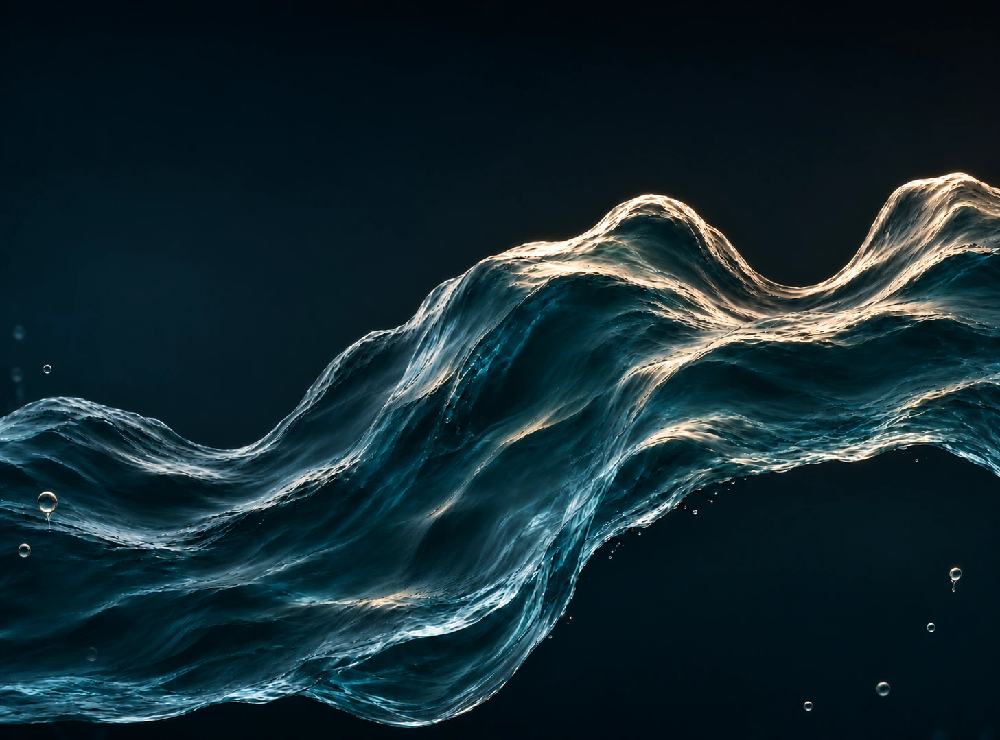

<section class="exhibit" id="exhibit" data-phase="water" aria-labelledby="hero-title">
  <div class="scene" id="scene" aria-hidden="true">
    
    
    <div class="scene-lens"></div>
    <canvas id="phase-canvas" class="phase-canvas"></canvas>
  </div>
  <div class="shade" aria-hidden="true"></div>

  {{navigation}}

  <h1 class="hero-title" id="hero-title" lang="en">
    <em>Fluid AI Lab</em>
    <span>Huang Yi's Personal Blog</span>
  </h1>

  <div class="hero-bottom">
    <div class="hero-controls">
      <div class="phase-control" role="group" aria-label="切换背景形态">
        <button class="phase-button" type="button" data-select="water" aria-pressed="true">
          <span class="phase-dot" aria-hidden="true"></span><span lang="en">Water</span>
        </button>
        <button class="phase-button" type="button" data-select="vapor" aria-pressed="false">
          <span class="phase-dot" aria-hidden="true"></span><span lang="en">Vapor</span>
        </button>
        <button class="play-button" id="play-button" type="button" aria-pressed="false" aria-label="循环播放" title="循环播放">
          <span class="play-icon" aria-hidden="true"></span>
        </button>
      </div>
      <p class="hint">
        <span class="hint-desktop">移动光标预览 · 点击画面切换</span>
        <span class="hint-touch">左右拖动预览 · 轻触画面切换</span>
      </p>
      <span class="sr-only" id="phase-status" role="status"></span>
    </div>

    <div class="hero-reading">
      <p>这里记录研究问题、论文阅读与项目进展。</p>
      <a class="pill pill-accent" href="./archive/">阅读博客</a>
    </div>
  </div>
</section>

<section class="latest reading-width" aria-labelledby="latest-title">
  <div class="section-heading">
    <h2 id="latest-title">最新文章</h2>
    <a href="./archive/">全部文章</a>
  </div>
  {{latest}}
</section>
